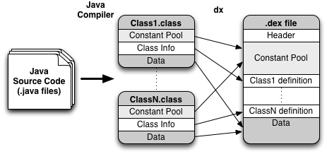
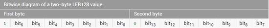
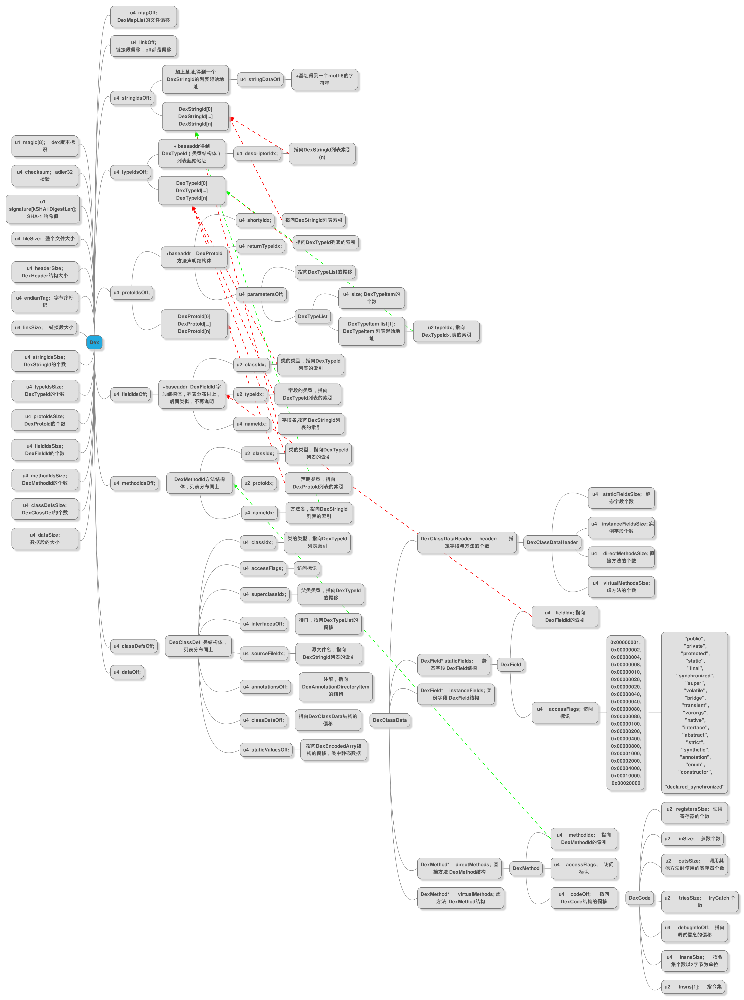

Dex文件是Android虚拟机下的可执行文件，包含了应用程序所用到所有操作指令和运行时数据。在程序编译过程中，java源文件先被编译成class文件，然后通过dx工具将多个class文件整合为一个dex文件。这样的文件结构使得各个类能够共享数据，充分减少了存储空间，提升了运行效率。
Java源文件生成Dex文件的映射关系。

我们可以在android源码中的/dalvik/libdex/DexFile.h找到关于dexfile的定义。
Andre
这里定义的DexFile是dex文件被映射到内存中的结构，出了基本的dex文件结构外，还包含了DexOptHead和尾部附加的数据，这些数据是Android系统为了结合当前平台特性对dex文件的结构进行了优化和扩充，是运行效率更高。
/*
* Structure representing a DEX file.
*
* Code should regard DexFile as opaque, using the API calls provided here
* to access specific structures.
*/
typedef struct DexFile {
/* directly-mapped "opt" header */
const DexOptHeader* pOptHeader;
/* pointers to directly-mapped structs and arrays in base DEX */
const DexHeader* pHeader;
const DexStringId* pStringIds;
const DexTypeId* pTypeIds;
const DexFieldId* pFieldIds;
const DexMethodId* pMethodIds;
const DexProtoId* pProtoIds;
const DexClassDef* pClassDefs;
const DexLink* pLinkData;
/* mapped in "auxillary" section */
const DexClassLookup* pClassLookup;
/* points to start of DEX file data */
const u1* baseAddr;
/* track memory overhead for auxillary structures */
int overhead;
/* additional app-specific data structures associated with the DEX */
void* auxData;
} DexFile;
| 名称 | 格式 | 描述 |
|---|---|---|
| header | header_item | 文件头。 |
| string_ids | string_id_item[] | 字符串索引表，记录了各个字符所在的偏移值，使用UTF-16编码。 |
| type_ids | type_id_item[] | 类型数据索引，记录了各个类型的字符串索引。 |
| proto_id | proto_id_item[] | 函数原型数据索引，记录了方法声明的字符串，返回类型和参数列表。 |
| field_ids | field_id_item[] | 字段数据索引，记录了所属类，声明类型和方法名等信息。 |
| method_ids | method_id_item[] | 类方法索引，记录了方法所属类，声明类型以及方法名等信息。 |
| class_defs | class_def_item[] | 类定义数据，记录了指定类的各类信息，包括接口，超类，类数据偏移量等。 |
| data | type_id_item[] | 类型数据索引，记录了各个类型的字符串索引。 |
| type_ids | ubyte[] | 数据区，保存着各个类的数据。 |
| link_data | ubyte[] | 静态连接数据。 |
##Header
header是dex文件的文件头，简单的记录了dex文件的一些基本信息和大致的数据分布。header的大小固定为0x70,其中每一项信息所占用的大小也是固定的。同样在/dalvik/libdex/DexFile.h可以看到header_item的定义：
/*
* Direct-mapped "header_item" struct.
*/
typedef struct DexHeader {
u1 magic[8]; /* includes version number */
u4 checksum; /* adler32 checksum */
u1 signature[kSHA1DigestLen]; /* SHA-1 hash */
u4 fileSize; /* length of entire file */
u4 headerSize; /* offset to start of next section */
u4 endianTag; /*字节序标号*/
u4 linkSize;
u4 linkOff;
u4 mapOff;
u4 stringIdsSize;
u4 stringIdsOff;
u4 typeIdsSize;
u4 typeIdsOff;
u4 protoIdsSize;
u4 protoIdsOff;
u4 fieldIdsSize;
u4 fieldIdsOff;
u4 methodIdsSize;
u4 methodIdsOff;
u4 classDefsSize;
u4 classDefsOff;
u4 dataSize;
u4 dataOff;
} DexHeader;
下表是每一项的基本信息：
| 名称 | 格式 | 描述 |
|---|---|---|
| magic | ubyte[4] | dex\n |
| version | Ubyte[4] | 035\0 或 036\0 |
| checksum | uint | 使用zlib 的adler32 所计算的32-bitsCheckSum . 计算的范围为DEX 文件的长度（Header->fileSize) 减去8bytes Magic Code 与4bytes CheckSum 的范围. 用来确保DEX 文件内容没有损毁. |
| signature | ubyte[20] | SHA-1signature (hash) 用来识别原本的DEX 文件( 被优化以前的DEX).SHA-1 计算的范围为DEX 文件的长度（Header->fileSize) 减去8bytes Magic Code,4 bytes CheckSum 与20bytesSHA-1 的范围. 用来识别最原本的DEX 文件的唯一性.( 所以被优化过后, 这个SHA-1 尽能用来识别原本的DEX 文件, 而无法 通过ODEX 文件计算回最原本的DEX 文件SHA-1 值了). |
| file_size | uint | 文件的总大小。 |
| header_size | uint= 0x70 | 用来记录目前DEXHeader 的大小( 现有版本为0x70bytes), 可用来做为后续Header 如果有改版时, 最基本的头栏位向前, 向后相容的依据. |
| endian_tag | uint= ENDIAN_CONSTANT | 预设值为Little-Endian, 在这栏位会显示32bits 值”0x12345678”.( 应该在Big-Endian 处理器上, 会转为“ 0x78563412”) |
| link_size | uint | LinkSection 的大小, 如果为0 表示该DEX 文件不是静态连结. |
| link_off | uint | 用来表示LinkSection 距离Dex 头的Offset. 如果LinkSize 为0, 此值也会为0. 资料格式可以参考struct DexLink. |
| map_off | uint | 用来表示MapItem 距离Dex 头的Offset. 如果为0, 表示这DEX 文件没有MapItem. 资料格式可以参考struct map_list. |
| string_ids_size | uint | 字符串地址列表中的元素个数。 |
| string_ids_off | uint | 字符串地址列表的偏移。 |
| type_ids_size | uint | 用来表示TypeIDs List 中的元素个数. |
| type_ids_off | uint | TypeIDs List 的文件偏移。如果type_ids_size 为0 ，则这个值亦为0。 |
| proto_ids_size | uint | 用来表示PrototypeIDs List 中的元素个数。 |
| proto_ids_off | uint | Prototype IDs 的文件偏移。如果proto_ids_size 为0 这个值亦为0. |
| field_ids_size | uint | Field IDs List的文件偏移。如果field_ids_size 为0 这个值亦为0。 |
| field_ids_off | uint | 字符串地址列表的偏移。 |
| method_ids_size | uint | 用来表示MethodIDs List 中的元素个数。 |
| method_ids_off | uint | 用来表示Method IDs List 距离Dex 头的Offset. 如果method_ids_size 为0 这个值亦为0. 资料格式可以参考struct DexMethodId. |
| class_defs_size | uint | 用来表示ClassDefinitions List 的总数. |
| class_defs_off | uint | 用来表示ClassDefinitionList 距离Dex 头的Offset. 如果class_defs_size 为0 这个值亦为0. 资料格式可以参考struct DexClassDef. |
| data_size | uint | 用来表示DataSection 的大小. 并需为sizeof(uint) 的偶数倍.( 所以就是0,8,16…etc) |
| data_off | uint | 用来表示DataSection 距离Dex 头的Offset. |
在header中有一个map_off,这是一个偏移地址，指向dex data区的maplist。
/*
* Direct-mapped "map_item".
*/
typedef struct DexMapItem {
u2 type; /* type code (see kDexType* above) */
u2 unused;
u4 size; /* count of items of the indicated type */
u4 offset; /* file offset to the start of data */
} DexMapItem;
/*
* Direct-mapped "map_list".
*/
typedef struct DexMapList {
u4 size; /* #of entries in list */
DexMapItem list[1]; /* entries */
} DexMapList;
map_list 里先用一个 uint 描述后面有 size 个 map_item , 后续就是对应的 size 个 map_item 描述 。map_item 结构有 4 个元素 ： type 表示该 map_item 的类型 ，本节能用到的描述如下 ，详细Dalvik
Executable Format 里 Type Code 的定义 ；size 表示再细分此 item ， 该类型的个数 ；offset 是第一个元素的针对文件初始位置的偏移量 ； unuse 是用对齐字节的 ，无实际用处 。在DexMapItem结构中，type是一个枚举常量。
/* map item type codes */
enum {
kDexTypeHeaderItem = 0x0000,
kDexTypeStringIdItem = 0x0001,
kDexTypeTypeIdItem = 0x0002,
kDexTypeProtoIdItem = 0x0003,
kDexTypeFieldIdItem = 0x0004,
kDexTypeMethodIdItem = 0x0005,
kDexTypeClassDefItem = 0x0006,
kDexTypeMapList = 0x1000,
kDexTypeTypeList = 0x1001,
kDexTypeAnnotationSetRefList = 0x1002,
kDexTypeAnnotationSetItem = 0x1003,
kDexTypeClassDataItem = 0x2000,
kDexTypeCodeItem = 0x2001,
kDexTypeStringDataItem = 0x2002,
kDexTypeDebugInfoItem = 0x2003,
kDexTypeAnnotationItem = 0x2004,
kDexTypeEncodedArrayItem = 0x2005,
kDexTypeAnnotationsDirectoryItem = 0x2006,
};
##string_ids
这一块区域中存储的是dex文件中字符串的资源的索引信息。即目标字符串在dex文件数据区的物理偏移地址。在DexFile.h中可以找到它的定义：
struct DexStringId {
u4 stringDataOff; /* 在dex文件中实际偏移量 */
};
该数据结构只有一个stringDataOff成员，当虚拟机需要读取该字符串是，只需要将dex文件在内存中的起始地址加上stringDataOff所表示的偏移值，即可得到该字符串在内存中的实际物理地址。
在Dex文件中，每个字符串都对应了一个DexStringId数据结构，该数据结构的大小为4B,是一个确定的量。并且虚拟机可以通过头文件中的String_ids_size知道当前Dex文件的字符串总数，也就是string_ids区域中DexStringId的总数，因此虚拟机通过简单的乘法即可实现对改索引资源进行正确的访问。
在data区存放的string并不是ascii编码，而是MUTF-8编码。这是一种修改过的UTF-8编码，与传统的UTF-8编码有以下几点区别：
- MUTF-8使用1-3字节编码
- 大于16位的Unicode编码U+10000~U+10ffff使用3字节来编码
- U+0000采用2字节来编码
- 采用空字符作为字符串的结尾
MUTF-8字符串的头部存放的是由uleb128编码的字符串个数(字符串个数不包括结尾的空字符)。
##type_ids
这一块区域中存储的是类型资源的索引信息。定义如下：
struct DexTypeId {
u4 descriptorIdx; /* 指向字符串索引表 */
};
在dex中，类型是是以字符串的形式保存在数据区的，因此DexTypeId数据结构中的descriptorIdx保存的是目标类型在字符串索引表里的序列号。虚拟机通过这个序列号从字符串索引表中找出对应类型的字符串。
##proto_ids
这一区域中存储的内容是方法原型资源的索引信息，数据结构DexProtoId负责规格化这些信息。
struct DexProtoId {
u4 shortyIdx; /* 方法声明字符串，指向字符串索引表 */
u4 returnTypeIdx; /* 方法返回类型，指向字符串索引表 */
u4 parametersOff; /* 指向一个DexTypeList的数据结构，DexTypeList表示参数列表*/
};
这个数据结构的前两个成员同样指向字符串索引表，而parametersOff指向的是一个DexTypeList的数据结构，这个结构体的定义如下：
/*
* Direct-mapped "type_list".
*/
typedef struct DexTypeList {
u4 size; /* 表示DexTypeItem数据结构的个数 */
DexTypeItem list[1]; /* DexTypeItem列表*/
} DexTypeList;
DexTypeList表示的是一个方法的参数列表，size是参数个数，list这个数组是一个DexTypeItem的数组，这个DexTypeItem就是表示参数类型的数据结构。
/*
* Direct-mapped "type_item".
*/
typedef struct DexTypeItem {
u2 typeIdx; /* 表示参数类型，指向type_ids索引表 */
} DexTypeItem;
typeIdx指向类型资源索引表，虚拟机通过该变亮就能获得相应的参数类型。
##field_ids
这一块区域保存的是代码中的字段的索引信息。用数据结构DexFieldId对索引信息规格化。
struct DexFieldId {
u2 classIdx; /* 表示所属类的类型 */
u2 typeIdx; /* 表示字段的类型 */
u4 nameIdx; /* 字段的名称 */
};
在DexFieldId中,classIdx和typeIdx都是指向类型索引表type_ids中的一个DexTypeId表项。而nameIdx是指向字符串索引表string_ids中的一个表项。
##method_ids
method_ids资源区保存的是Dex文件中类方法数据的索引信息。采用的数据结构为
struct DexMethodId {
u2 classIdx; /* 表示所属类的类型 */
u2 protoIdx; /* 表示方法原型的类型 */
u4 nameIdx; /* 方法名称 */
};
classIdx指向类型索引表type_ids中的一个DexTypeId，变量protoIdx记录的该方法的原型，指向proto_ids表。nameIdx指向字符串表string_ids，表示方法名称。
##class_def
在class_def资源区中，使用数据结构DexClassDef来对资源信息规格化。
struct DexClassDef {
u4 classIdx; /* 表示类的类型，指向类型索引表 */
u4 accessFlags; /* 访问标识符 */
u4 superclassIdx; /* 表示超类的类型，指向类型索引表 */
u4 interfacesOff; /* 接口信息，指向一个DexTypeList数据结构*/
u4 sourceFileIdx; /* 表示源文件名，指向字符串索引表 */
u4 annotationsOff; /* 注解目录结构 */
u4 classDataOff; /* 类数据，指向一个DexClassData数据结构*/
u4 staticValuesOff; /* 静态值得偏移量 */
};
访问标识符，表示了该类的属性，同样也适用于字段和方法，具体如下表：
| AccessFlag比特位 | 类（Class） | 方法（Method） | 域（Field） |
|---|---|---|---|
| 0x00001 | Public | Public | Public |
| 0x00002 | Private | Private | Private |
| 0x00004 | Protected | Protected | Protected |
| 0x00008 | Static | Static | Static |
| 0x00010 | Final | Final | Final |
| 0x00020 | N/A | Synchronized | N/A |
| 0x00040 | N/A | Bridge | Volatile |
| 0x00080 | N/A | VarArgs | Transient |
| 0x00100 | N/A | Native | N/A |
| 0x00200 | Interface | N/A | N/A |
| 0x00400 | Abstract | Abstract | N/A |
| 0x00800 | N/A | Strict | N/A |
| 0x01000 | Synthetic | Synthetic | Synthetic |
| 0x02000 | Annotation | N/A | N/A |
| 0x04000 | Enum | N/A | Public |
| 0x08000 | N/A | Miranda | N/A |
| 0x10000 | Verified | Constructor | N/A |
| 0x20000 | Optimized | Declared_Synchronized | N/A |
DexClassDef的成员都和前面的分析类似，不同的是classDataOff是一个dex文件内部的偏移值，指向的是一个DexClassData数据结构实例，DexClassData的定义从/dalvik/libdex/DexClass.h中可以找到。
在DexClass.h中，所有的u4类型，都被转为成uleb128类型。如下所示：
/* Read the header of a class_data_item without verification. This
* updates the given data pointer to point past the end of the read
* data. */
DEX_INLINE void dexReadClassDataHeader(const u1** pData,
DexClassDataHeader *pHeader) {
pHeader->staticFieldsSize = readUnsignedLeb128(pData);
pHeader->instanceFieldsSize = readUnsignedLeb128(pData);
pHeader->directMethodsSize = readUnsignedLeb128(pData);
pHeader->virtualMethodsSize = readUnsignedLeb128(pData);
}
/* Read an encoded_field without verification. This updates the
* given data pointer to point past the end of the read data.
*
* The lastIndex value should be set to 0 before the first field in
* a list is read. It is updated as fields are read and used in the
* decode process.
*/
DEX_INLINE void dexReadClassDataField(const u1** pData, DexField* pField,
u4* lastIndex) {
u4 index = *lastIndex + readUnsignedLeb128(pData);
pField->accessFlags = readUnsignedLeb128(pData);
pField->fieldIdx = index;
*lastIndex = index;
}
/* Read an encoded_method without verification. This updates the
* given data pointer to point past the end of the read data.
*
* The lastIndex value should be set to 0 before the first method in
* a list is read. It is updated as fields are read and used in the
* decode process.
*/
DEX_INLINE void dexReadClassDataMethod(const u1** pData, DexMethod* pMethod,
u4* lastIndex) {
u4 index = *lastIndex + readUnsignedLeb128(pData);
pMethod->accessFlags = readUnsignedLeb128(pData);
pMethod->codeOff = readUnsignedLeb128(pData);
pMethod->methodIdx = index;
*lastIndex = index;
}
每个uleb128类型是leb128的无符号类型，每个leb128类型的数据包含1-5个字节，表示一个32bit的数值。每个字节只有7位有效，最高一位用来表示是否需要使用到下一个字节，比如如果第一个字节最高位为1，表示还需要使用到第2个字节，如果第二个字节的最高位为1，表示会使用到第3个字节，以此类推，最多5个字节。对于一个2个字节的leb128类型数据，其结构如图所示。

/* expanded form of class_data_item. Note: If a particular item is
* absent (e.g., no static fields), then the corresponding pointer
* is set to NULL. */
typedef struct DexClassData {
DexClassDataHeader header; /*类数据头*/
DexField* staticFields; /*指向目标的静态字段*/
DexField* instanceFields; /*指向目标类的实例字段*/
DexMethod* directMethods; /*指向目标类的直接方法*/
DexMethod* virtualMethods; /*指向目标类的虚方法*/
} DexClassData;
首先看这个DexClassData的header成员，这个成员是一个DexClassDataHeader数据结构，记录了目标类中各个部分数据的个数，主要包括静态字段，实例字段，直接方法和虚方法。
/* expanded form of a class_data_item header */
typedef struct DexClassDataHeader {
u4 staticFieldsSize;
u4 instanceFieldsSize;
u4 directMethodsSize;
u4 virtualMethodsSize;
} DexClassDataHeader;
再看DexField，它的定义如下。
struct DexField {
u4 fieldIdx; /* 指向字段索引表中的一个表项，即一个DexFieldId的数据结构 */
u4 accessFlags; /*访问表示符*/
};
DexMethod描述了类的方法。先看定义。
struct DexMethod {
u4 methodIdx; /* 指向方法索引表中的一个表项，即一个DexMethodId数据结构 */
u4 accessFlags; /*访问标识符*/
u4 codeOff; /* 指向一个DexCode的数据结构 */
};
注意codeOff这个成员，它指向的是一个DexCode的数据结构，而DexCode中记录的正是Dex文件中目标类方法的字节码。
struct DexCode {
u2 registersSize; /*寄存器个数*/
u2 insSize; /*输入参数个数*/
u2 outsSize; /*外部方法使用寄存器数*/
u2 triesSize; /*tries个数*/
u4 debugInfoOff; /* 调试信息地址 */
u4 insnsSize; /*方法指令个数 */
u2 insns[1]; /*真实指令数组*/
/* followed by optional u2 padding */
/* followed by try_item[triesSize] */
/* followed by uleb128 handlersSize */
/* followed by catch_handler_item[handlersSize] */
};
Dex文件通过DexCode来管理类方法，成员insns数组保存的就是方法的真实指令的二进制数据，关于对这些数据的解析，可以参考 https://source.android.com/devices/tech/dalvik/dalvik-bytecode.html。
最后放一张boyliang发的dex文件结构思维导图。
